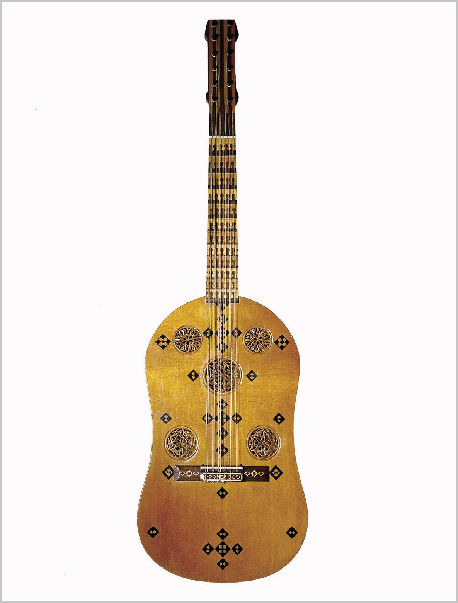
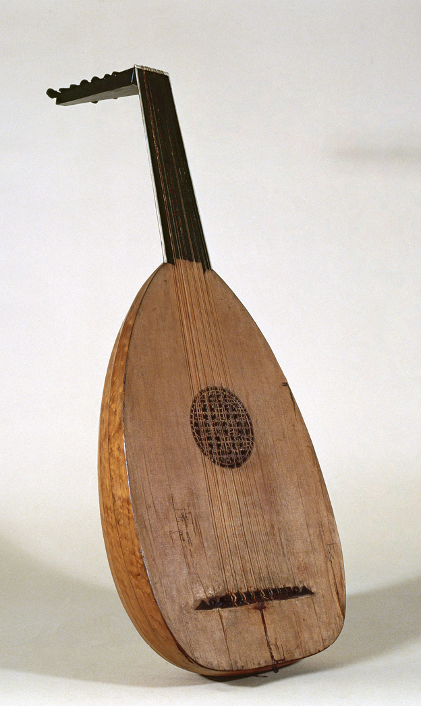

Leading instruments by country
- Spain: the vihuela (an ancestor of the guitar) was particularly prominent, with famous composers such as Luys de Milán and Narváez.
- England: ensembles of viola and the virginal (a keyboard instrument) were particularly popular.
The most popular instrument
The lute was the most widespread plucked string instrument throughout Europe. Its most important composer was the Englishman John Dowland.
Evolution into the Baroque period
With the emergence of the modern orchestra during the Baroque period, many Renaissance instruments disappeared. Others evolved to improve their sound:
- The sackbut evolved into the trombone.
- The shawm evolved into the oboe.
 |
 |
 |